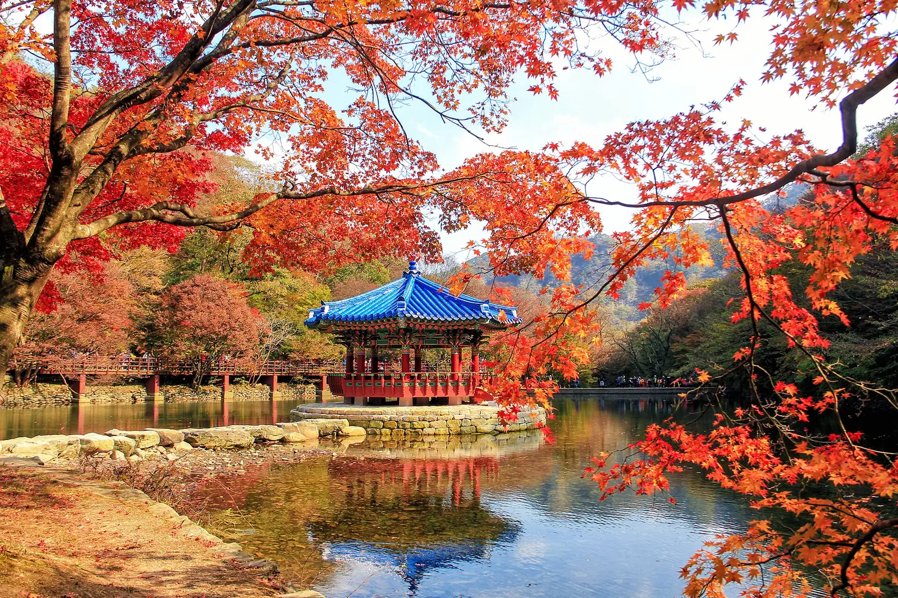
▲ 연못 위 정자(우화정)가 붉은 단풍에 둘러싸인 모습. 2016년 11월 6일 촬영, 올해 모습이 아니다. 사진=Tung Thanh Dang(위키미디어 커먼즈, CC BY-SA 3.0)
"내장산 단풍 절정이 11월 4일이라는데, 우화정도 그날일까?" 산림청이 9월 22일 낸 2026 단풍절정 예측지도에서 내장산 단풍나무류의 절정 예측일은 11월 4일(수)이다. 오늘(10월 11일) 기준으로 아직 24일 남았다. 다만 이 날짜는 산 전체에 하나뿐인 값이고, 케이블카 전망대와 연못가 우화정, 입구 쪽 단풍터널이 같은 날 물드는 것은 아니다. 이 글은 2026년 10월 11일에 국립공원공단 내장산 공지, 산림청 보도자료를 정리한 기존 기사, 한국관광공사 TourAPI를 확인해 시기와 코스 선택에 집중해 정리했다. 구간별 날짜는 공식 자료가 없어 카프리즘 추정으로 표시했다.
💡 먼저 결론
산림청 예측 절정일은 11월 4일, 주말로는 10월 31일~11월 1일(−3일)과 11월 7일(+3일)이 가장 가깝다. 고지대인 케이블카 전망대는 앞 주말, 연못가·입구 도로변은 뒤 주말이 유리하다고 보는 것이 이 글의 추정이다. 올해 차량 통제·셔틀 일정 상세는 내장산 차량 통제·셔틀 기사로 넘긴다. 내장산국립공원 공지 바로가기
▲ 연못 위 정자(우화정)가 붉은 단풍에 둘러싸인 모습. 2016년 11월 6일 촬영, 올해 모습이 아니다. 사진=Tung Thanh Dang(위키미디어 커먼즈, CC BY-SA 3.0)
1. 한눈에 보기 — 확인한 것과 확인하지 못한 것
아래 표는 이 글에 쓴 값의 근거와 상태를 나눈 것이다. 확인하지 못한 항목은 날짜를 쓰지 않았다.
| 항목 | 확인된 값 | 출처·상태 |
|---|---|---|
| 내장산 절정 예측일 | 11월 4일(단풍나무류, 산림청 기준 잎 50% 변색일) | 산림청 2026.9.22 보도자료 본문의 산지별 예측일(수종 구분은 지도 기준) |
| 전국 단풍나무류 절정 예측 | 10월 31일. 최근 5년 평균보다 약 0.8일 늦음 | 산림청 보도자료 |
| 내장산 첫 단풍(시작)일 | 확인하지 못했다 | 산림청 보도자료는 전국 첫 단풍(9월 14일 점봉산)만 안내 |
| 올해 차량 출입 통제 공고 | 2026.10.8 공지 게시. 통제구간 2곳(2.1km·2.3km) 안내도 확인 | 국립공원공단 내장산 공원별 알림. 시행 기간은 본문에서 읽지 못함 |
| 탐방 예약제 운영 공고 | 2026.9.7 공지 게시 | 제목만 확인. 구간·기간·정원은 확인하지 못함 |
| 단풍 실시간 영상 | CCTV 설치 행정예고(2026.10.11) | 아직 행정예고 단계. 올해 제공 여부는 확인하지 못함 |
| 케이블카 운영 | 탐방안내소~연자봉 중턱 전망대. 08:00~17:30, 연중무휴이나 상시 변동 | 한국관광공사 TourAPI(수정일 2026-10-07). 요금은 확인하지 못함 |
2. 시작·절정 — 기관마다 기준이 다르다
"절정 11월 4일"을 그대로 읽으면 안 되는 이유는 기준이다. 산림청·국립수목원 지도는 잎의 50% 이상이 물든 날을 하루 단위로 찍은 값이다. 기상청은 산 전체의 약 20%가 물들면 첫 단풍(시작), 약 80%가 물들면 절정으로 본다는 설명이 언론 보도에 있다(기상청 원문은 이번에 열어보지 못했다). 같은 산이어도 기관에 따라 날짜가 며칠씩 다를 수 있다는 뜻이다. 자세한 비교는 산림청 공식 지도 기사와 시작·절정 시차 기사에 있다.
| 용어 | 기준 | 내장산 2026 |
|---|---|---|
| 시작(첫 단풍) | 산 전체의 약 20%(기상청 설명) | 확인하지 못함. 절정 2주 전쯤으로 가늠하면 10월 하순이지만 카프리즘의 계산일 뿐이다 |
| 산림청 절정 | 잎 50% 이상 변색 | 11월 4일(수) |
| 80% 절정 | 산 전체의 약 80%(기상청 설명) | 공식 예측값 없음. 50%보다 며칠 뒤로 보되 일수는 확인하지 못함 |
| 낙엽 단계 | 절정 이후 잎이 떨어지는 시기 | 11월 중순 이후. 확인된 날짜는 없음 |
시작에서 절정까지는 통상 2주 안팎이라는 점은 기존 기사에서 확인한 내용이다. 올해 산림청은 최근 5년 평균보다 절정이 약 0.8일 늦다고 밝혔다. 하루가 안 되는 차이라 일정을 바꿀 정도는 아니지만, 가을 기온에 따라 예측이 어긋날 수 있다는 점은 감안해야 한다. 기존 한 기사가 적은 "10월 25일~11월 7일"이라는 범위는 산림청 지도에서 확인되지 않아, 이 글은 11월 4일을 기준으로 삼았다.
3. 구간별 시차 — 높은 곳이 먼저, 연못가는 나중
단풍은 고지대에서 저지대로 내려온다는 점이 기존 기사의 공통 결론이다. 내장산국립공원 안내도에는 서래봉 624m, 월영봉 427m가 표기돼 있고, 케이블카는 연자봉 중턱 전망대까지 오른다. 내장사 일대와 우화정은 그보다 낮은 입구 쪽이다. 이 고도 차이에 산림청 11월 4일을 얹어 구간별로 "보기 좋은 시기"를 잡은 것이 아래 도표다. 공식 구간별 날짜가 아니라 카프리즘 추정이다.
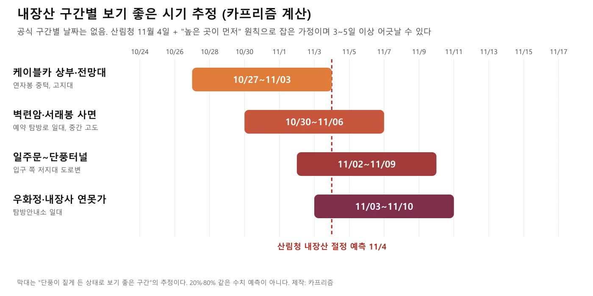
▲ 구간별 보기 좋은 시기 추정. 산림청 11월 4일과 고도 순서를 근거로 한 카프리즘 계산이다. 제작=카프리즘
| 구간 | 위치 특징 | 보기 좋은 시기 추정 | 근거와 한계 |
|---|---|---|---|
| 케이블카 상부·전망대 | 탐방안내소에서 케이블카로 연자봉 중턱까지. 하차 후 도보 10분(300m) | 10월 27일~11월 3일 | 고지대 우선 원칙. 케이블카가 운행하지 않는 날은 걸어 올라야 해 일정이 달라짐 |
| 벽련암·서래봉 사면 | 서래봉(624m) 방향 탐방로 일대 | 10월 30일~11월 6일 | 중간 고도 가정. 예약제 구간과 기간은 공고 본문을 확인하지 못함 |
| 일주문~단풍터널 | 입구 쪽 도로변 단풍길. 차량 통제구간과 겹침 | 11월 2일~11월 9일 | 저지대 가정. 단풍나무 가로수의 개별 시차는 확인하지 못함 |
| 우화정·내장사 연못가 | 국립공원 입구 정자(우화정), 탐방안내소 일대 | 11월 3일~11월 10일 | 산림청 대표 예측일과 가장 가깝다고 보았으나 실측 근거는 없음 |
같은 구간에서도 색 편차가 크다. 내장산은 우리나라 자생 단풍 11종이 모두 자란다고 소개되는 곳이라, 종마다 물드는 시점이 달라 2~3주에 걸쳐 색이 바뀐다는 점도 기존 기사에 있다. 하루 안에서도 붉은색 구간과 노란색 구간이 섞여 보일 수 있다.
4. 구간별 코스 — 거리와 이동 방법
코스별로 공식 자료에서 확인한 값만 표로 모았다. 확인하지 못한 값은 비워 두었다.
| 코스 | 구간·특징 | 확인된 거리·시간 | 출처·확인하지 못한 것 |
|---|---|---|---|
| 일주문~단풍터널 | 입구에서 내장사 방향으로 이어지는 단풍길. 올해 통제구간(차량)과 겹침 | 차량 통제구간: 내장호주차장(구 내장4주차장)~월령교 2.1km | 공단 2026.10.8 공고 안내도. 단풍터널 자체의 길이는 자료마다 달라 확인하지 못함 |
| 우화정·내장사 | 우화정은 국립공원 입구의 연못 위 정자. 내장사는 636년 창건 사찰 | 차량 통제구간: 연자교~내장산탐방안내소 2.3km | TourAPI·공단 안내도. 우화정~내장사 도보 시간은 확인하지 못함 |
| 케이블카·전망대 | 탐방안내소~연자봉 중턱 전망대. 시즌에는 수시 운영 | 하차 후 전망대까지 300m(도보 10분). 상부에서 연자봉·신선봉 등산로 연결 | TourAPI. 탑승 시간·요금은 확인하지 못함. 기존 기사의 요금은 확인 시점이 다름 |
| 벽련암·서래봉 | 서래봉 방향 탐방로. 9월 7일 예약제 운영 공고와 관련 가능성 | 서래봉 624m(안내도 표기) | 공고 본문을 열지 못해 구간·기간·정원은 확인하지 못함. 2차 자료의 숫자는 쓰지 않음 |
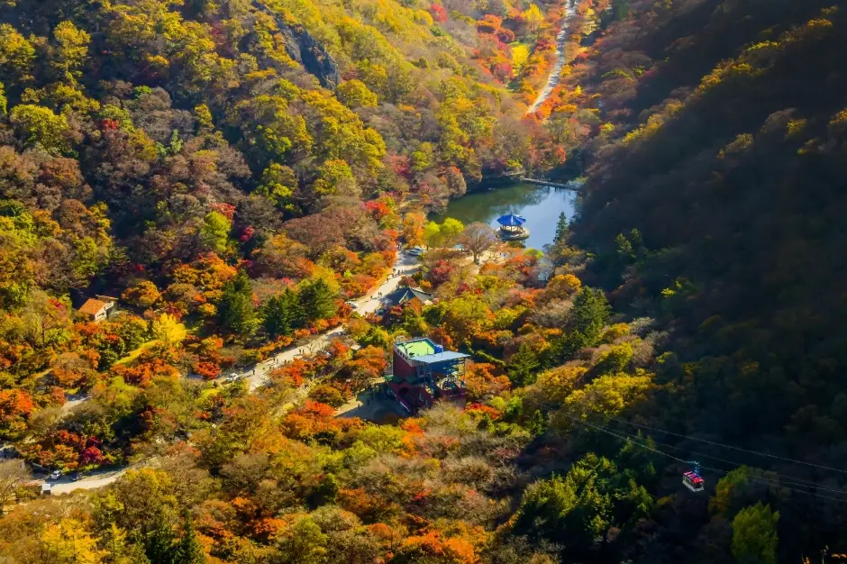
▲ 계곡 연못과 탐방로 주변이 붉게 물든 내장산 항공 촬영 사진. 촬영 시기는 확인하지 못했다. 사진=한국관광공사
일주문부터 단풍터널, 우화정까지는 케이블카 승강장과 같은 동선에 놓인다. 그래서 걸어서 가는 방문객은 먼저 입구 쪽 도로변 단풍을 지난 뒤 연못가를 거쳐 케이블카로 올라가는 순서가 자연스럽다. 한 번에 모두 최고 상태를 보기는 어렵고, 오르는 구간과 걷는 구간의 시차를 어떻게 두느냐가 선택 포인트다.
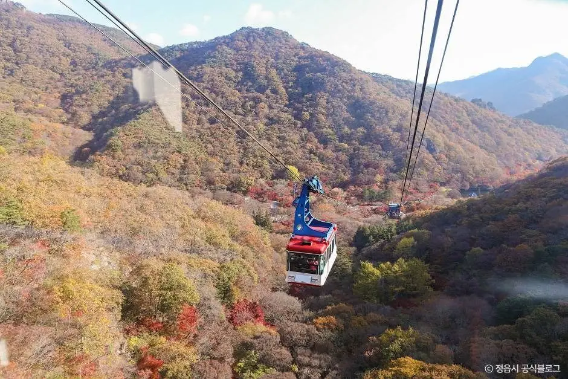
▲ 단풍으로 물든 산사면 위를 지나는 내장산 케이블카. 촬영 시기는 확인하지 못했다. 사진=한국관광공사
5. 4개 주말 비교 — 어느 날 가면 어디가 좋은가
산림청 11월 4일을 주말에 얹으면 10월 24~25일은 10일 전, 10월 31일~11월 1일은 3일 전, 11월 7~8일은 3일 뒤, 11월 14~15일은 10일 뒤다. 두 주말이 정확히 3일씩 떨어져 있어 아래 표처럼 구간별로 나눠 고르면 된다.
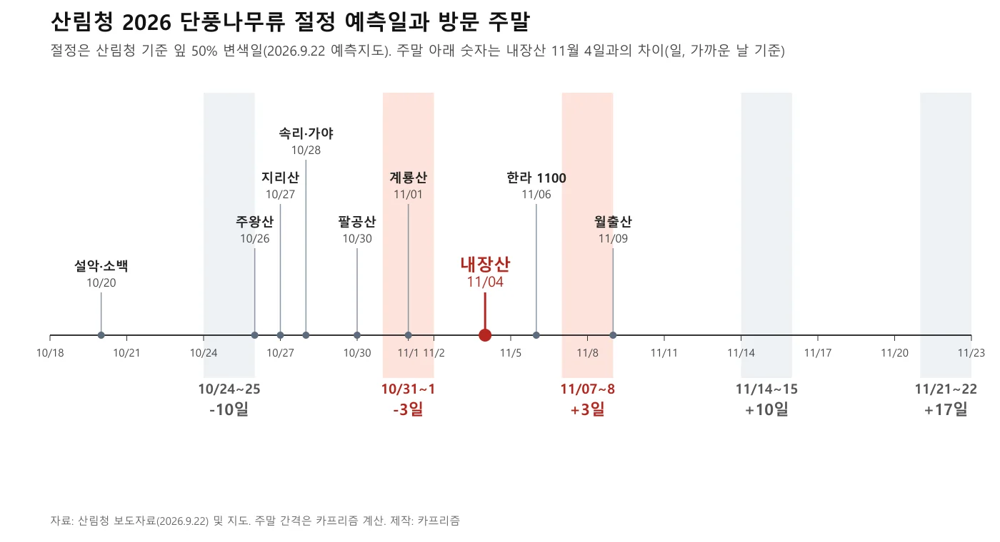
▲ 산림청 단풍나무류 절정 예측일(설악산 10월 20일~월출산 11월 9일)과 주말을 겹친 도표. 카프리즘 제작. 제작=카프리즘
| 주말 | 내장산 11/4와 차이 | 추천 구간 | 주의 |
|---|---|---|---|
| 10월 24~25일 | −10일(색이 오르는 중) | 케이블카 전망대 위주. 입구 쪽은 초록이 많을 수 있음 | 시작 단계라 기대한 붉은색이 덜할 수 있음 |
| 10월 31일~11월 1일 | −3일 | 전망대·벽련암 사면. 연못가는 한창 오르는 단계 | 절정 직전이라 인파가 가장 몰릴 수 있음 |
| 11월 7~8일 | +3일 | 단풍터널·우화정·내장사 | 전망대 쪽은 낙엽이 시작됐을 가능성. 해가 짧아 오후 일정 조정 |
| 11월 14~15일 | +10일 | 낮은 곳 늦단풍. 백양사지구 대안 | 올해 기온에 따라 이미 낙엽 단계일 수 있음 |
10월 25일 전에는 시작 소식을 확인한 뒤 움직이는 편이 낫다. 올해 내장산 첫 단풍 날짜는 산림청 보도자료에 나오지 않아, 출발 직전에 내장산국립공원 공지 바로가기와 국립수목원 검색서비스에서 현황을 확인하자.
6. 예년 기록으로 가늠하기 — 사진·보도에 남은 날짜
올해 숫자가 아닌 개별 기록일 뿐이지만, 같은 시기에 어떤 모습이었는지 보면 감이 온다. 아래 사진은 위키미디어 커먼즈에 올라온 촬영일 정보를 따랐다.
| 날짜 | 장소·상태 | 출처 |
|---|---|---|
| 2016년 10월 29일 | 연못가와 전각 부근. 붉은 가지 옆에 초록·노랑 잎이 섞인 상태 | 위키미디어 파일 정보(SHUNSHAN PIAO) |
| 2016년 11월 5~6일 | 우화정 일대와 탐방로. 붉은 단풍이 짙어진 모습 | 위키미디어 파일 정보(Jeongtaeyoung·Tung Thanh Dang) |
| 2017년 11월 13일 | 단풍나무 길. 양쪽 가로수가 붉고 주황으로 물듦 | 위키미디어 파일 정보(Norton Ip) |
| 2025년 11월 7일 | 정읍시 안내: 절반가량 물들었고 다음 주중 절정 예상 | 쿠키뉴스 보도(2025.11.7) |
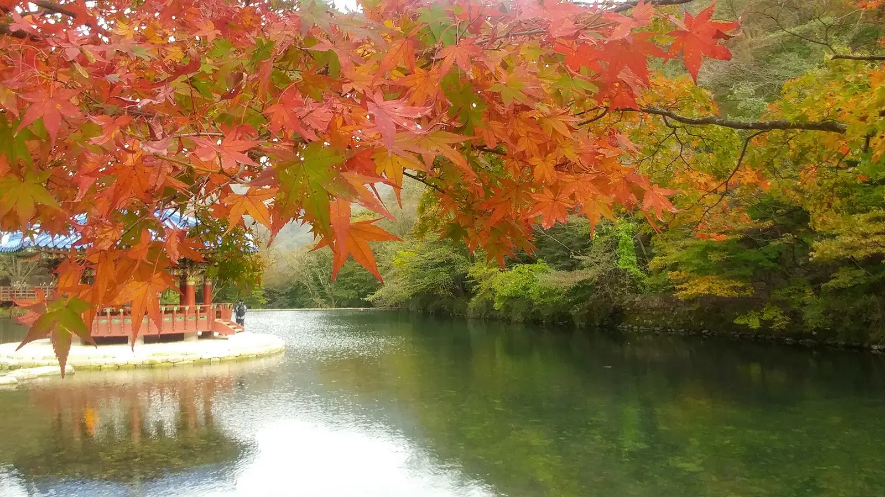
▲ 붉은 단풍 가지 너머 연못과 정자 일부가 보이는 모습. 2016년 10월 29일 촬영. 사진=SHUNSHAN PIAO(위키미디어 커먼즈, CC BY-SA 3.0)
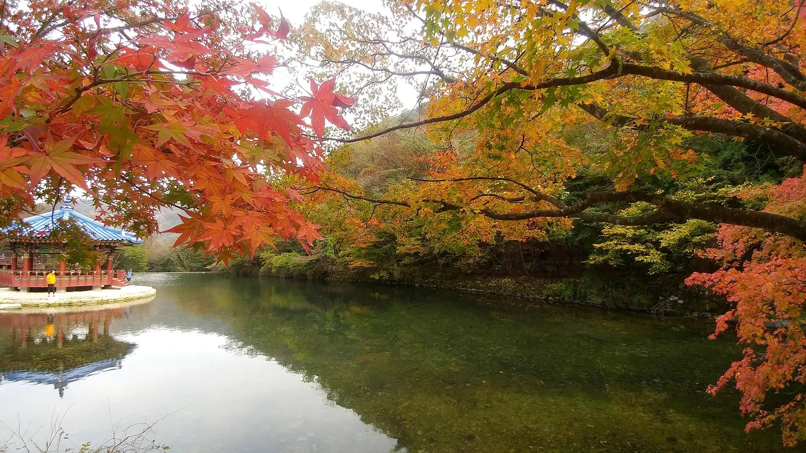
▲ 같은 날 연못 건너편. 붉은 잎은 가지 끝에 보이고 나머지는 초록·노랑이 많다. 2016년 10월 29일 촬영. 사진=SHUNSHAN PIAO(위키미디어 커먼즈, CC BY-SA 3.0)
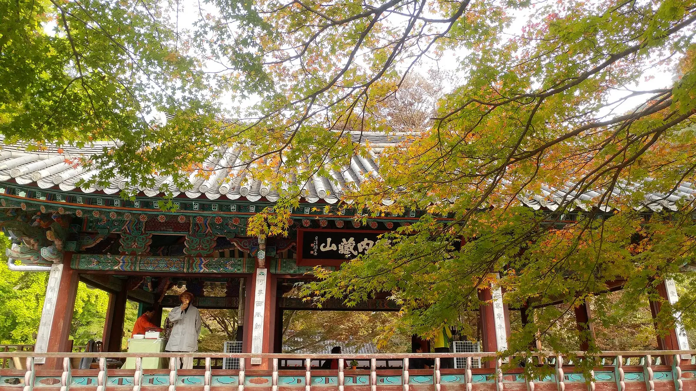
▲ 전각 처마 앞에 초록·노랑 잎이 섞인 모습. 2016년 10월 29일 촬영. 사진=SHUNSHAN PIAO(위키미디어 커먼즈, CC BY-SA 3.0)
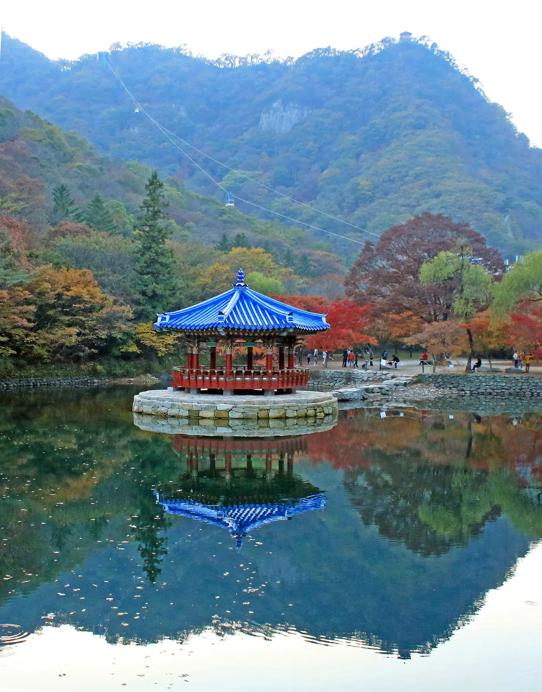
▲ 붉은 잎과 초록 잎이 함께 보이는 우화정 일대. 2016년 11월 5일 촬영. 사진=Jeongtaeyoung(위키미디어 커먼즈, CC BY-SA 3.0)
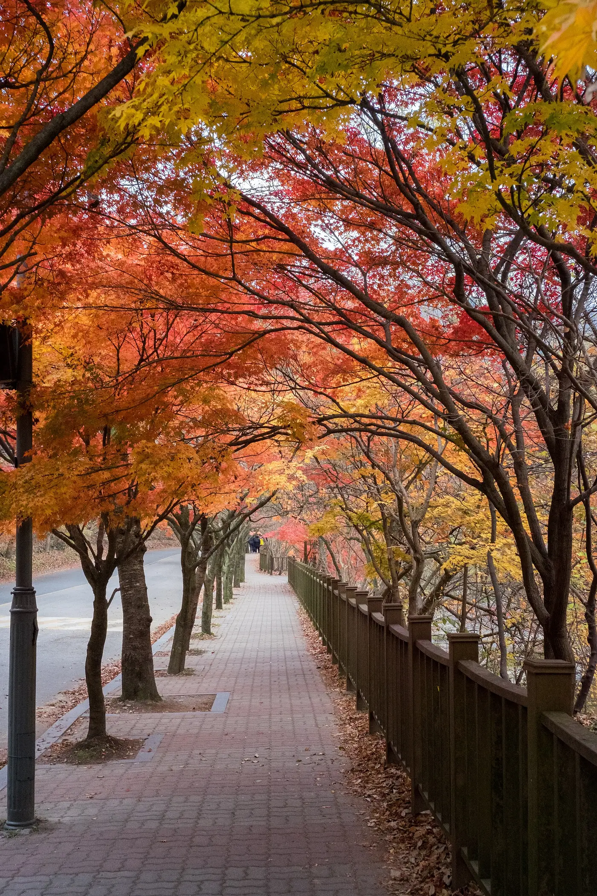
▲ 단풍나무가 양쪽에서 터널처럼 이어진 길. 2017년 11월 13일 촬영. 사진=Norton Ip(Hong Kong)(위키미디어 커먼즈, CC BY-SA 2.0)
2016년에는 10월 29일에도 연못가에 초록이 많았고, 일주일 뒤인 11월 5~6일 전후로 붉은색이 짙어졌다. 올해 산림청 예측일 11월 4일과 크게 어긋나지 않는 흐름이다. 반면 2025년은 11월 7일에야 절반가량이었다는 정읍시 안내가 있어, 해마다 며칠에서 일주일 이상 차이가 날 수 있다.
7. 통제·예약·주차 — 올해 공지 현황
상세는 기존 기사에 있으니 여기서는 올해 새로 확인한 것만 적는다. 내장산국립공원사무소는 2026년 10월 8일 "2026년 가을 성수기 내장산국립공원 차량 출입 통제 공고"를 올렸다. 본문 대신 첨부된 통제구간 안내도에는 내장호주차장(구 내장4주차장)~월령교 2.1km와 연자교~내장산탐방안내소 2.3km 두 구간이 표시돼 있다. 기존 기사에 있던 2.1km 외에 연자교~탐방안내소 2.3km가 안내도에 따로 있는 점이 눈에 띈다. 다만 통제 시작·종료일과 셔틀 운행시간은 이 안내도에 없어 확인하지 못했다.
| 게시일 | 제목 | 내용 확인 |
|---|---|---|
| 2026.10.11 | 단풍 실시간 영상 서비스 CCTV 설치 행정예고 | 제목만 확인 |
| 2026.10.10 | 2026년 가을성수기 공원 내 불법·무질서 행위 단속 공고 | 제목만 확인(본문 텍스트 없음) |
| 2026.10.8 | 2026년 가을 성수기 차량 출입 통제 공고 | 첨부 안내도 2구간 확인. 날짜는 확인하지 못함 |
| 2026.9.7 | 내장산국립공원 탐방 예약제 운영 공고 | 제목만 확인(공지 목록 기준) |
- 통제·셔틀 상세: 내장산 단풍철 차량 통제·셔틀·주차·케이블카 기사
- 산불조심기간 입산통제: 10월 20일과 11월 15일 날짜 기사. 올해 내장산 구간의 공식 시행일은 확인하지 못했다.
- 갓길 주정차: 단풍철 갓길 주정차 단속 기사
- 대안: 같은 국립공원 백양사지구는 장성 백양사 단풍 기사를 참고하자.
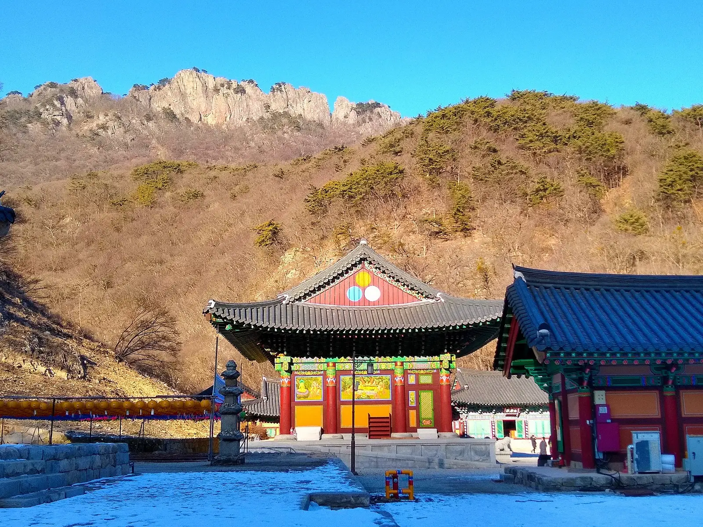
▲ 잎이 진 겨울(1월)의 내장사 일대와 능선. 절정이 지난 뒤에는 산이 이렇게 비어 보인다. 2019년 1월 6일 촬영. 사진=Lance Vanlewen(위키미디어 커먼즈, CC BY-SA 4.0)
8. 혼잡 시간대와 하루 동선
기존 기사 기준으로 단풍 절정기에는 오전 10시만 넘어도 주차장이 만차가 되고, 설악산·내장산·지리산 방면 고속도로는 토요일 오전 8시를 기점으로 정체가 시작된다고 한다. 다만 올해 정체 예측은 확인하지 못했다. 시기별 코스 선택과 함께 아래처럼 하루를 짜면 겹침을 줄일 수 있다.
| 시간 | 동선 | 이유 |
|---|---|---|
| 이른 아침 | 내장호주차장 도착 후 통제구간 도보 또는 셔틀 | 주차장 만차 전에 진입 |
| 오전 | 우화정·내장사 연못가 | 관람객이 몰리기 전 |
| 점심 전후 | 케이블카 탑승 후 전망대 300m | 현장 발권 대기 시간 확인 |
| 오후 | 단풍터널을 천천히 걷고 하산 | 셔틀 막차 시각을 확인하고 하산 시각을 앞당김 |
9. 체크리스트와 자주 묻는 질문
출발 전 체크
- 2026년 통제·셔틀 공고 확인(공단 10월 8일 공지 안내도)
- 방문 일주일 전 현황 확인: 내장산 공지, 국립수목원 검색서비스, 정읍시 안내
- 산불조심기간 입산통제 구간 확인(내장산 구간 공식 시행일은 미확인)
- 케이블카는 현장 발권. 운행 상황은 063-538-8120으로 확인
- 예약제 구간(서래봉 방향)은 국립공원 예약시스템 공고 확인
FAQ
Q. 11월 4일에 가면 가장 붉은가?
산림청 기준은 잎 50%가 물든 날이다. 구간별로는 전망대가 앞서고 연못가가 뒤서므로, 한 곳을 정하면 해당 구간 추정 시기를 우선하자.
Q. 첫 단풍은 언제였나?
올해 내장산 첫 단풍 날짜는 확인하지 못했다. 전국 첫 단풍은 9월 14일 점봉산이다.
Q. 평일 방문이 낫나?
평일 혼잡 통계는 확인하지 못했다. 통제 기간에는 평일에도 셔틀 대기가 생길 수 있다.
Q. 주말 하루만 갈 수 있다면?
10월 31일~11월 1일은 전망대, 11월 7일은 단풍터널과 연못가가 유리하다는 것이 이 글의 해석이다.
10. 같이 보면 좋은 카프리즘 기사
✅ 출발 전 체크리스트
· 산림청 내장산 예측 절정 11월 4일(50% 기준), 주말은 10월 31일~11월 1일(−3일)·11월 7일(+3일)이 가깝다
· 구간별 시기는 카프리즘 추정: 전망대 10월 27일~11월 3일, 단풍터널 11월 2~9일, 우화정 11월 3~10일
· 차량 통제구간은 2곳(2.1km·2.3km)이며 시행 기간은 공고 확인
· 케이블카는 08:00~17:30 변동 가능, 063-538-8120
· 내장산 첫 단풍 날짜와 예약제 구간은 확인하지 못함
11. 정리
산림청 2026 예측 기준 내장산 단풍나무류 절정은 11월 4일(수)이다. 가까운 주말은 10월 31일~11월 1일(−3일)과 11월 7일(+3일)이고, 케이블카 전망대는 앞 주말, 단풍터널·우화정은 뒤 주말이 유리하다는 것이 카프리즘의 추정이다.
올해 공단은 10월 8일 차량 출입 통제 공고를 올렸고 안내도에는 내장호주차장~월령교 2.1km와 연자교~탐방안내소 2.3km가 표시돼 있지만, 시행 기간·셔틀 시간·예약제 구간은 확인하지 못했다.